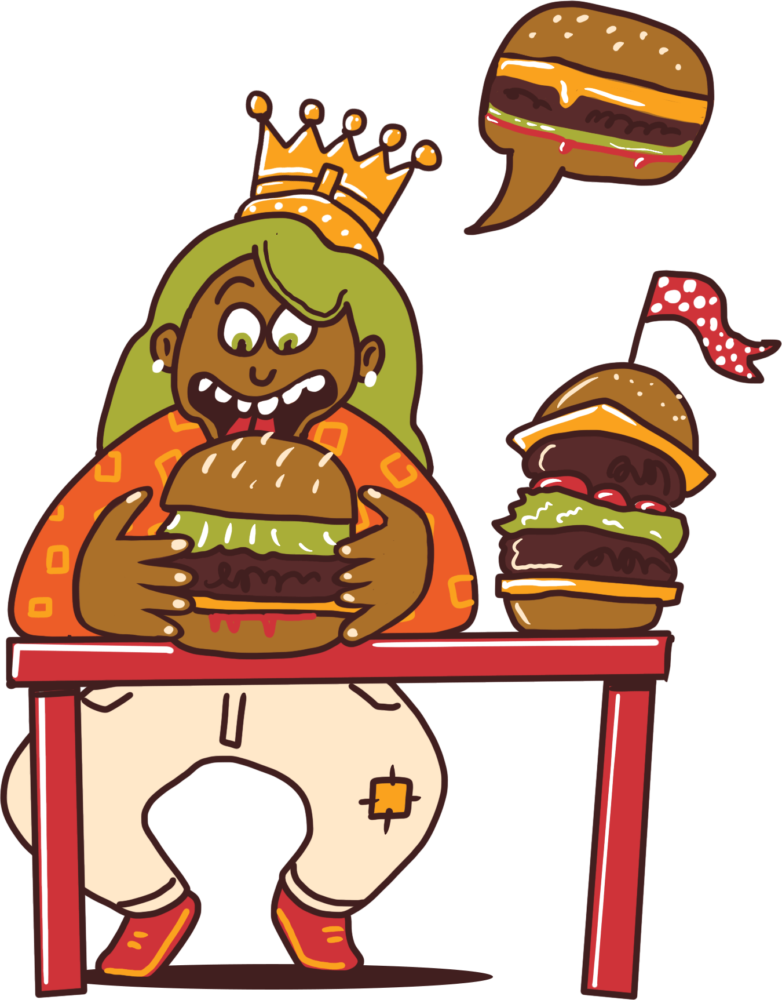

FAQ
🤔 What is Le Burger Week?
Le Burger Week is a week long festival that celebrates the best burgers in Canada. Le Burger Week is an interactive festival that connects people to food.
Restaurants across Canada are carefully selected to create a special burger for the event. Participants engage with the festival by eating original burgers, sharing their experiences on social media, and voting using the Le Burger Week website and app.
📅 When is Le Burger Week?
September 1st to 7th, annually.
🉠But this year, since it's our 10th year in operation, we will celebrate with 2 whole weeks of Le Burger Week. 🤩 From the 1st to the 14th.
🌠Where is Le Burger Week?
Le Burger Week is in your restaurant! We bring people from all around town to visit your spot and try your burger.
Beginning in Montreal 10 years ago, the festival now engages hundreds of thousands of participants in all major Canadian cities. If you want to bring Le Burger Week to your city, contact us at team@peoplemovertech.com, today!
💰 How much is Le Burger Week?
One simple fee.
$250 + taxes
🔠No burger? No problem.
People in your city have identified your restaurant as one of their favourites. Just because there are no burgers on your menu, doesn’t mean you cannot add one for Le Burger Week.
With subcategories like ‘The Imposter’, ‘The Best Bun’ and ‘Judges’ Choice’, Le Burger Week is a great opportunity to create something extra delicious, exciting and new. Vegetarian, vegan, sushi - even dessert burgers - the possibilities are endless. Exercise your culinary creativity and let your city be the judge!
📣 What do I get from Le Burger Week?
As a restaurant partner, you will receive our team’s unwavering support in helping you generate sales.
What’s more, we provide the following:
- Social media mentions on our networks for your restaurant and burger
- Part of our national and local PR campaigns (super popular!)
- Listing on our official website (super popular!)
- Your venue will receive potential marketing assets advertising the festival
The best way to take advantage of the festival is to fill in your profile page with your burger information, take amazing burger pictures and send them to us as soon as possible and make somehting extra ordinary!
🖠Testimonials
-Morrie Baker
Le Burger Week is one of our best sales weeks of the year! There is no way we can do without them, making over 25k in burger sales in one week.
Burger Bar, Montreal
-Alon Biron
We never expected sales and the crowd to be so great! We are forever Le Burger Week fans.
Art Brgr, Montreal
📰 Media coverage
â„¹ï¸ Other questions?
Please email our sales team.
